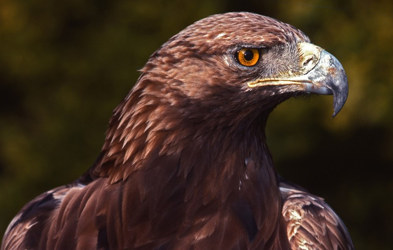

AGUILA REAL

< Una de las aves rapaces más emblemáticas sin duda es el águila real. Este animal se ha convertido para muchas naciones en un símbolo de poder y fuerza. Perteneciente a la familia de las Accipitridae, las águilas reales han llegado a poblar desde Europa y Asia, hasta parte de Norteamérica, encontrándose también pero en menor cantidad en África. En España también es posible encontrarse a esta rapaz, siendo muy habitual en nuestros bosques y zonas montañosas. Debido a su facilidad de cría no se encuentra en peligro de extinción y también por todo lo que esta ave representa.
pagina principal
.